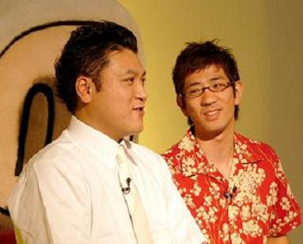
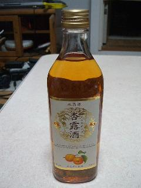
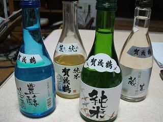
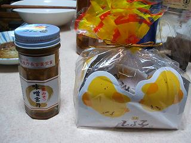

日々、想ふ
〜過去感じたことがつれづれと〜
（できるだけ最大化してお読みください）
日々、想ふ
思った通りにことは運ばず。６/１５
今日の天気予報が雨だったから
傘持って学校行ったのに降らなくて、
バイトだったのに行ってみたら
大口の宴会がキャンセルになったみたいで早上がりで、
思った通りにことが運ばない今日の日記は一回休み、タケユキでした。
今日の天気：まあ雨が降らないほうがいいんだけど。
健康にはたぶんいいはず。６/１４
明日は天気が崩れるみたいですね、タケユキです。
昨日の日記で今日は朝７時に起きないといけないって書いてたんだけど
別に用事があったっていうわけじゃなくて先週から始めたジョギングのため。
夜行性に偏った生活を直すため授業が１限からあろうとなかろうと
朝７時に起きてジョギングをするっていう生活を
実は先週の金曜日から平日は毎日続けてます、まだ三日目だけど。
人間は日光を浴びると目が覚めるみたいな話を
なにかの番組でやってたのを見たような気がするので
どんなに眠かろうと朝７時起きてジョギングしてたら
すっきりした朝が迎えることができて
一日を、特に午前中を有意義に過ごせる気がしたんですよ。
ちなみに今日火曜日は午後からの授業のみ。
普段なら１２時ごろまで寝て学校に行く生活。
しかしこの予定通りできたなら午前に３時間は
自由に使える時間ができるはず。
本日朝７時予定通り起床。
ジョギングに出かけて８時前に帰宅。
二度寝。
おい、規則正しい生活はどこいった。
今日の学校：遅刻はしませんでしたけど。
昔もよく痛くなってた。６/１３
実験の授業中ずっと腹痛でした、タケユキです。
この夏場にクーラーでおなか壊すっていう
現代のわけのわからん状況ってどうにかならないもんですか。
明日は朝７時に起きるので早めに寝ます。
今日の早寝：最近早朝ジョギング。
ちょっと微妙かもしれませんが。６/１２

今話題の貴乃花親方とアンタッチャブル山崎って実は似てません？タケユキでした。
今日のドライブ：今週から梅雨入りなので走り納め。
仕事の後にってやつ。６/１１
梅雨だし天気予報も雨だって言ってたから
久しぶりに電車でバイト行ったんだけど
結局雨が降ることもなく、というか帰る頃には
晴れ間さえ見えてたのはなんだったんでしょうね、
天気予報はあくまで予報ってことですか、タケユキです。
今日のバイトはしんどかった。
なんか一人で全部仕事してた気がするような。
でもバイト後は飲みに行けたんで楽しかった。
帰りが電車ってんで気にせず酒が飲めたのは久しぶり。
今日はビールがうまかった。
明日も今日みたいにビールが思えるような一日を過ごしたい。
今日のお酒：俺は普段ビールは苦いって思って敬遠する人間です。
どこまで飲めるか。６/１０
今日は夜に九州から高校のときの友達が泊まりに来るみたいです、
どう言ったら分かりやすいんだろ、
暗闇にまぎれたらどこにいるか分からなくなる人です、
高校のときは５組でしたよ、会うのいつぶりだろ。
うちのクラスは幹事役の丸い人がヘタレなのかクラス仲が悪かったのか
全然同窓会とかもしないから高校の同級生で会うことがある人って
だいぶ少ないよなぁと今しみじみ思い始めました、タケユキです。
というわけで遠くから来るわけだしもてなしてやらねばと
学校終わってから食料を調達すべくスーパーへ。
酒も飲むだろと思ってお酒のコーナー回ってみたら
友達のブログでおいしかったって言ってたお酒を見つけた。
杏露酒
買った。あんずのお酒らしい。
今週は酒強化週間なので日本酒も準備。

広島の日本酒賀茂鶴コレクション
・・なにごとも揃えたがるこの癖どうにかしたい。。。
いくら酒強化週間だからって日本酒なんかまともに飲めん俺が
こんなに日本酒いらんじゃろ。
今日の酒盛り：たぶん結局カシスオレンジとかそういうの。
*********************************************************************
今日の私信・彼女さんへ：というわけで１０時過ぎに迎えに行ってきましたよ。
なんか微妙に新大阪駅で迷子になってたらしい。。。
そんな真っ黒な人が彼女さんからお土産を預かってきてた。

味噌雲丹とひよこ饅頭
ちなみに俺はひよこはお尻のほうから食べます。
わざわざありがとね。ごちそうさまでしたm(_ _)m
そっとしといて。６/９
今日はタンクトップの上に夏っぽいアロハ系のシャツを着て学校行ったんだけど
友達に指摘されるまでシャツを裏表に着てたことに
気付けなかったので今日の日記はおやすみです、タケユキでした。
今日の株価：明日に期待、明日に。
待ちぼうけ。６/８
値がさ株(一株が千円以上する高い株)には手をださないほうがいいですよ、
素人が手をだすと痛い目を見ます。
今果てしなく痛い目を見ています、タケユキです。
株で大損しそうな空気な日は昼飯は抜くつもりで株始めたから
今日は昼飯食べるつもりはなかったんだけど
昼に友達に昼飯食おうって誘われたから
昼前に食堂のベンチ座って待ってたんだけど
１２時になっても現れず、
５分経っても現れず、１０分経っても現れなかったので
電話してみたら「今起きた」の返事。
久しぶりにキレた。
今日の日記：というわけでこの日記を見た俺を今日キレさせたあなたは
今度昼飯をおごってくれるといいと思う。
別に最後にするつもりなわけじゃない。６/７
とりあえず今日の中間テストは無事突破、タケユキです。
最近のケータイには入力予測機能なるものがついてるのが多いです、
俺のケータイにもその機能がついてます。
文字を打ってる途中に以前に入力した単語が新しい順にリストに出てくるってやつ。
ひとつ前のケータイにはそんな予測機能なんてついてなかったから
全部文字を入力してたんだけど
今はだいぶ慣れたんでだいたいが予測機能をつかってメールしてます。
「き」って入力しただけで「今日」って変換できるのはかなり便利ですよ。
便利な世の中になったもんだなあと思って
ケータイ使ってたんだけど
昨日中間テストの勉強のことでメールしてて
「ラストスパート」ってメールで打とうとしてたら
「ラスト」で確定したあとに「スパ」って打って変換しようとしたら
「スパゲッティ」が出てきました。
ラストスパゲッティて。
今日のネタ：昨日書こうとして忘れてたやつ。
道を示すだけ、はまるのはいつも他人。６/６
今日は昼飯３食分ほど勝ちました、株で、タケユキです。
というわけで明日は調子に乗って１０万ほど別の株に投資してみようと思います。
リアルマネーゲームは金銭感覚がおかしくなりそう。
目の前に表示される金額は紛れもなく自分のお金なのに
テレビゲームのギャンブルやってるような感じがしてくる。
まぁ買ってるうちはいいんだけど
負けだした時はちゃんと歯止めがきかなくなりそうで怖い。。
面白いんでやめる気はさらさらないんですが。
今日演習室で隣に座ってた人に儲かったって話をしたら
自分も始めてみようかななんてことを言ってた人がいたけど
俺は別に勧めたわけじゃありませんよ、ただ道を示しただけ。
そういえば今も昔も俺が興味をもったことに
俺以上に興味を示す人っているもんなんだよなぁ。
他人がやってると余計に面白そうに見えてくるもんなんだろうか。
今日の日記：昼にネタ思いついたんだけど忘れた。
乗客は常に１名だけ。６/４・５
土曜日はバイトの後で送別会がありました、
俺は飲み会の後にバイトの先輩を送っていくことになってたので
酒は飲まずに飲み会を過ごす。
送別会の飲み会が終わったのが午前３時、
みんなはそれからカラオケ行くんだろうけど
俺は他にも帰るって人を送ってたりしたので
結局二次会のカラオケには不参加、
その上送別会の主役の子達とは一言も話さず、
タケシーというよりはタクシーな一日でした、
でもHP上ではタケユキと名乗りますよ、タケユキです。
んで結局土曜に寝たのは午前４時とか５時とか。
それで日曜日起きたらもうバイト行く時間だったので働いてきました。
今日は別のバイトの先輩がバイクに乗せろって言うもんで
バイト終わってから西九条(USJがあるあたり)まで走ってから
家に帰ってきました。
今週の土日はほんとタケシーというよりタクシーでした。
今日のバイト：あ〜ほんとしんど。
葛藤と戦え。６/３
週末到来ですね、タケユキです。
昨日買った株が買った後から急落してました、昨日の終値４４６円、
買値は４５１円だったから５円の下落。
１００株買ってたからこの値で売ると金額にして５００円のマイナスに。
株の売買ってのは証券取引所が開いている時間にしか行われません。
午前の取引の始めごろを「寄り付き」、終わりごろを「前引け」、
午後の取引の始めごろを「後場寄り付き」、終わりごろを「大引け」といいます。
とにかく損失だけは避けようと
朝から買った株の値動きをずっと見てたらなんとか復調の兆しが。
前引けで株価が４５６円になったところで持ってた株を売却。
買値が４５１円だから差し引き５００円の収益。
なんとか損しなくてよかったと思いながら
一応売った後も株の値動きを見てたら大引けでの株価は４７０円。
しかも俺が売ったこの株今日の値上がり率ランキングの１１位にランクインしてた。
・・もっと我慢できてたら今頃は・・。
いや１００株しか買ってないからたいしたことはないんですが。
今週から株を始めたわけだけど収益は千円ちょっと。
まあ損しなかった分よしとして来週またがんばろ。
ちなみに株の売買は土日はお休みですよ。
今日の教訓：損をしなかったことでそれは失敗じゃない。
止まらぬ恐怖。６/２
勉強がおもしろいくらい分かりません、
俺ってこんなにバカだったっけ？タケユキです。
なので明日は朝イチで起きて勉強してやろうかと思ってます。
夜徹夜してがんばろうって気持ちがないのは
ただやる気がないわけではありません
一人暮らしだと起こしてくれる人がいないもんで
徹夜して明け方寝たら１００％起きれません。
目覚ましかけてても無意識のうちに止めてる自分がいるみたいで
いっそのこと明日からは７時起きの生活にでもしてやろうかと。
朝起きたら散歩に行く習慣でもつけようかと思ってる次第です。
これもすべて勉強のため、別に刺激のない日々に退屈してるわけじゃありません。
刺激なら十分あります、
今日買った株が買った５分後に急落した時は
株価を表示するページで何回更新ボタンを押したかわかりません。
ボタンを押すごとに値が落ちていく恐怖・・刺激とかそんなやさしいもんじゃない。
もうちょっと我慢すればよかった・・。
今日の株価：
| 銘柄 | 買値 |
終値 |
| 双日ホールディングス（株） |
４５１円 | ４４６円 |
先月から。６/１
知ってますか株でもうけたお金にも税金がかかります。
ある株を買って、その株を売った時に利益が出れば、
所得税や地方税やらで利益の１０％をもっていかれます。
たとえば一万円もうけたら千円。
１０００万円もうけたら１００万円。
株で損をした場合には税金はかからないけど
少しでも利益が出たならそのお金は課税の対象になります。
それがどれだけ少なかろうとも。
今日持ってた株を売って２００円もうけたんだけど
口座に入ってくる利益はしっかり１８０円になる予定です、
今日ほど国の税というものを憎んだことはありません、
そうまでして市民からお金を巻き上げたいか国よ、タケユキです。
というわけで先月の終わりから株を始めました。
ネットで株というものを体験できる*シミュレーションじゃなくて
(*最初に１００万円与えられてそれを増やしていくとかそういうの)
現実世界の株の取引をやってます。
自分のお金でやりくりしてやる株です。
最初はシミュレーションの株取引から始める人もいるらしいけど
それじゃ俺は本気になれん気がしたので始めてみました。
まあ元手がたいしたことないから利益があってもたいしたことないんだけど。
とりあえず昼飯代くらいはかせげるようになりたい。
今日の持ち株：４円ばかりあがってました。